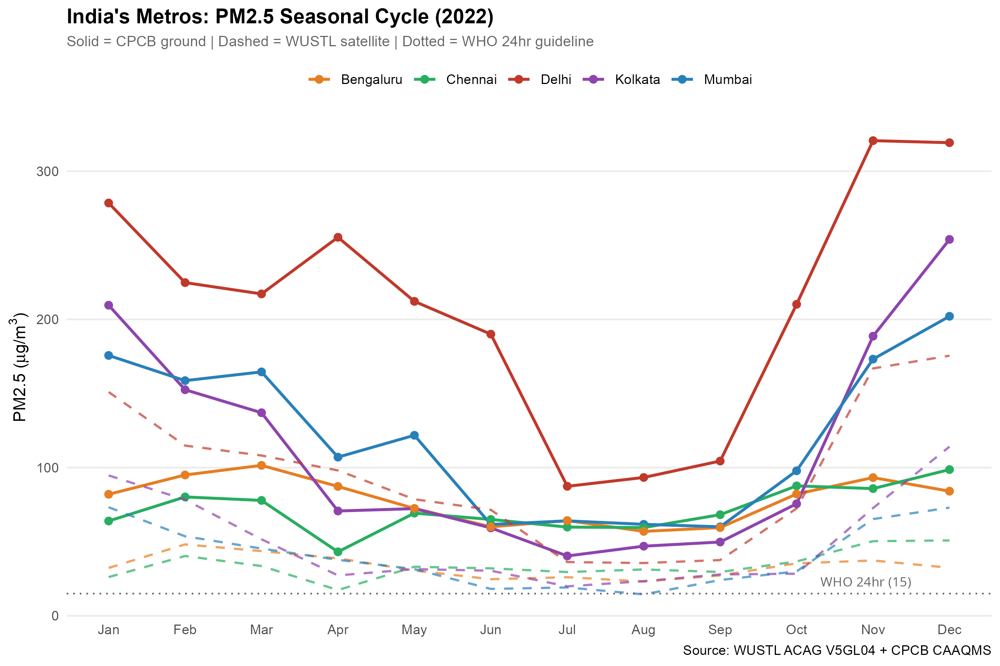
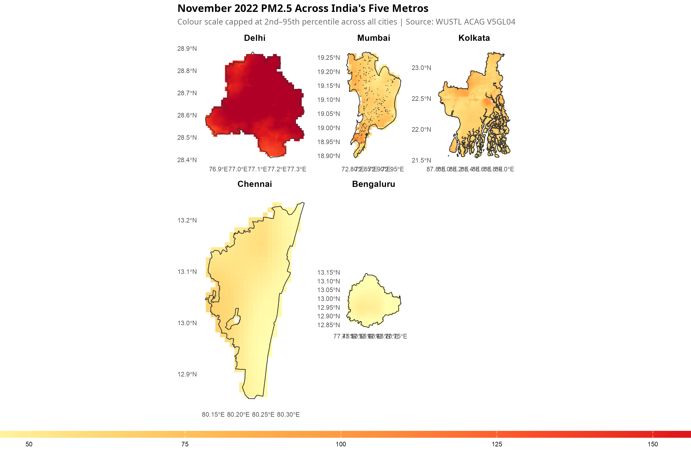
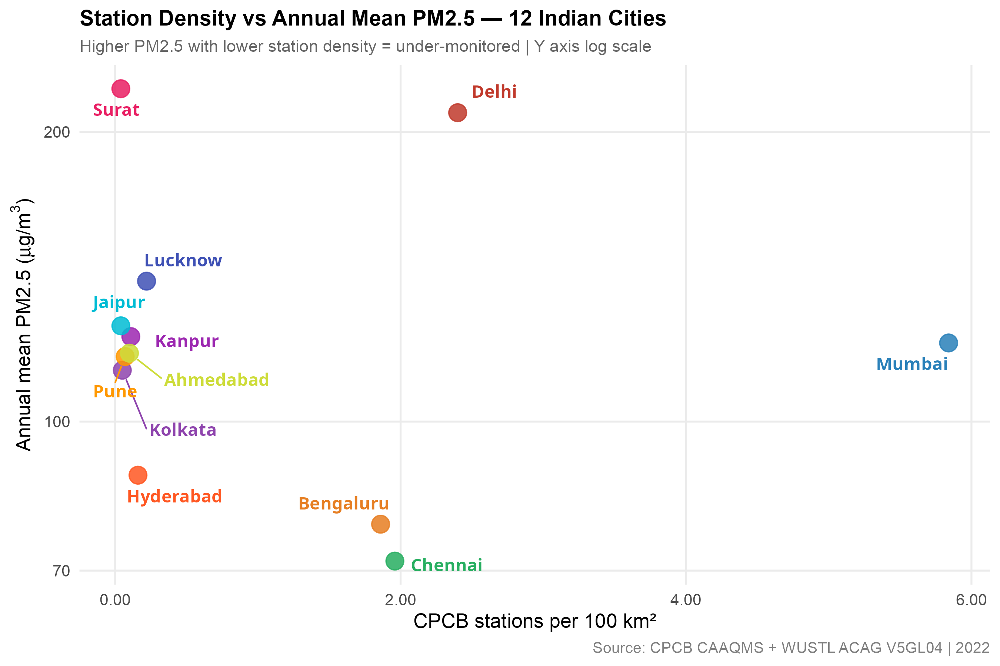
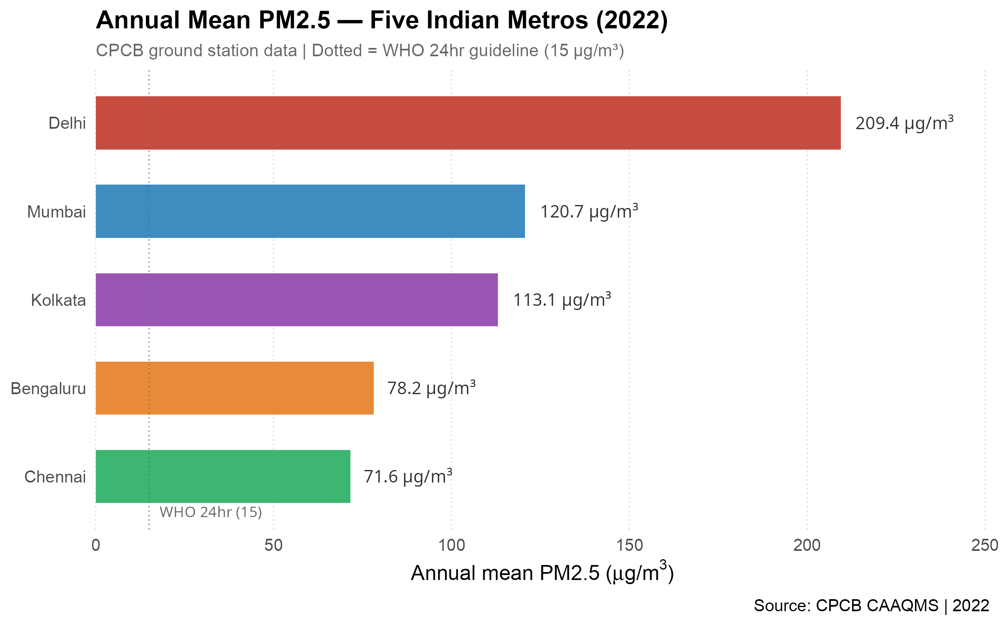

India's Metropolitan Air: A PM2.5 Comparison Across Five Cities (2022)
Saket Choudhary and Darakhshan Nehal
Source:vignettes/metro_wide_pm2.5_analysis_comparative_2022.Rmd
metro_wide_pm2.5_analysis_comparative_2022.RmdIntroduction
India’s five largest metropolitan areas — Delhi, Mumbai, Kolkata, Chennai, and Bengaluru — span the Indo-Gangetic Plain, the western and eastern coasts, the Deccan plateau, and the Bay of Bengal. Each city has a distinct pollution profile shaped by topography, industry, traffic, and climate.
This vignette uses the vayuayanR package to ask a single
question across all five cities:
How does PM2.5 pollution vary across India’s major metros — seasonally, spatially, and in terms of monitoring coverage?
We use two independent data sources throughout:
- WUSTL ACAG V5GL04 — satellite-derived PM2.5 at ~1 km resolution
- CPCB CAAQMS — ground-level monitoring station readings
Data & Methods
Satellite Data
Monthly PM2.5 estimates from WUSTL ACAG V5GL04 (~1 km resolution, 1998–2022). Files are read using a fast bounding-box subsetting approach that avoids loading the full 121 MB global array.
Ground Data
City-level daily PM2.5 downloaded from the CPCB data repository using
cpcb_download_city_data(). Monthly means are computed from
daily readings.
Setup
if (!require("pacman", quietly = TRUE)) {
install.packages("pacman", repos = "https://cloud.r-project.org")
}
pacman::p_load(
vayuayan,
tidyverse,
purrr,
terra,
sf,
tidyterra,
ncdf4,
khroma,
scales,
patchwork,
ggrepel,
geodata
)
# Create output folders if they don't exist
dirs <- c("data/metro", "figures/metro")
for (d in dirs) dir.create(d, recursive = TRUE, showWarnings = FALSE)
# Convenience path helpers — all data and figures go into subfolders
data_path <- function(f) file.path("data/metro", f)
fig_path <- function(f) file.path("figures/metro", f)City Configuration
cities <- list(
Delhi = list(name = "Delhi", color = "#c0392b"),
Mumbai = list(name = "Mumbai", color = "#2980b9"),
Kolkata = list(name = "Kolkata", color = "#8e44ad"),
Chennai = list(name = "Chennai", color = "#27ae60"),
Bengaluru = list(name = "Bengaluru", color = "#e67e22")
)
city_names <- names(cities)
city_colors <- setNames(sapply(cities, `[[`, "color"), city_names)
# Extended 12-city palette for scatter plot
extra_colors <- c(
Surat = "#e91e63",
Kanpur = "#9c27b0",
Jaipur = "#00bcd4",
Lucknow = "#3f51b5",
Pune = "#ff9800",
Ahmedabad = "#cddc39",
Hyderabad = "#ff5722"
)
all_colors <- c(city_colors, extra_colors)
extra_cities <- names(extra_colors)Helper Functions
read_v5gl04_fast <- function(nc_path, shape) {
bbox <- sf::st_bbox(shape)
nc <- ncdf4::nc_open(nc_path)
lons <- ncdf4::ncvar_get(nc, "lon")
lats <- ncdf4::ncvar_get(nc, "lat")
lon_idx <- which(lons >= bbox["xmin"] & lons <= bbox["xmax"])
lat_idx <- which(lats >= bbox["ymin"] & lats <= bbox["ymax"])
data <- ncdf4::ncvar_get(
nc, "GWRPM25",
start = c(min(lon_idx), min(lat_idx)),
count = c(length(lon_idx), length(lat_idx))
)
ncdf4::nc_close(nc)
mean(data, na.rm = TRUE)
}
load_v5gl04_rast <- function(year, month, shape) {
nc_path <- sprintf(
"/NAS/climatehealth/WUSTL_PM2.5/V5GL04/Global/Monthly/V5GL04.HybridPM25.Global.%04d%02d-%04d%02d.nc",
year, month, year, month
)
bbox <- sf::st_bbox(shape)
nc <- ncdf4::nc_open(nc_path)
lons <- ncdf4::ncvar_get(nc, "lon")
lats <- ncdf4::ncvar_get(nc, "lat")
lon_idx <- which(lons >= bbox["xmin"] & lons <= bbox["xmax"])
lat_idx <- which(lats >= bbox["ymin"] & lats <= bbox["ymax"])
data <- ncdf4::ncvar_get(
nc, "GWRPM25",
start = c(min(lon_idx), min(lat_idx)),
count = c(length(lon_idx), length(lat_idx))
)
ncdf4::nc_close(nc)
r <- terra::rast(
nrows = length(lat_idx), ncols = length(lon_idx),
xmin = min(lons[lon_idx]), xmax = max(lons[lon_idx]),
ymin = min(lats[lat_idx]), ymax = max(lats[lat_idx]),
crs = "EPSG:4326"
)
terra::values(r) <- t(data)[nrow(t(data)):1, ]
r
}Results
The Season: How Does PM2.5 Vary Through the Year?
The first question is whether all five cities follow the same seasonal rhythm. Geography and climate should produce very different patterns — but do the data confirm this?
Ground Data: City-Level Monthly Means
# City-level CSV paths — all stored in data/metro/
city_files <- list(
Delhi = data_path("delhi_aqi_2022.csv"),
Mumbai = data_path("mumbai_aqi_2022.csv"),
Kolkata = data_path("kolkata_aqi_2022.csv"),
Chennai = data_path("chennai_aqi_2022.csv"),
Bengaluru = data_path("bengaluru_aqi_2022.csv")
)
city_download_names <- list(
Delhi = "Delhi", Mumbai = "Mumbai", Kolkata = "Kolkata",
Chennai = "Chennai", Bengaluru = "Bengaluru"
)
for (city in city_names) {
if (!file.exists(city_files[[city]])) {
cpcb_download_city_data(
city = city_download_names[[city]],
year = 2022,
save_location = city_files[[city]]
)
}
}
# Read and reshape — auto-detect first column (Day or Date depending on city)
ground_monthly <- map_dfr(city_names, function(city) {
df <- read.csv(city_files[[city]])
day_col <- names(df)[1]
df %>%
pivot_longer(cols = -all_of(day_col),
names_to = "Month_Name", values_to = "pm25") %>%
mutate(month = match(Month_Name, month.name)) %>%
filter(!is.na(pm25), !is.na(month)) %>%
group_by(month) %>%
summarise(ground_pm25 = mean(pm25, na.rm = TRUE), .groups = "drop") %>%
mutate(city = city)
})
print(
ground_monthly %>%
pivot_wider(names_from = city, values_from = ground_pm25) %>%
arrange(month)
)
#> # A tibble: 12 × 6
#> month Delhi Mumbai Kolkata Chennai Bengaluru
#> <int> <dbl> <dbl> <dbl> <dbl> <dbl>
#> 1 1 279. 176. 210. 64.0 82
#> 2 2 225. 159. 153. 80.2 95.0
#> 3 3 217. 165. 137. 77.9 102.
#> 4 4 255. 107. 70.7 43.2 87.3
#> 5 5 212. 122. 72.3 69.3 72.5
#> 6 6 190. 61.6 59.3 65.0 60.0
#> 7 7 87.4 64.1 40.4 59.9 64.3
#> 8 8 93.4 61.7 47 59.5 57.0
#> 9 9 104. 60.1 49.8 68.2 59.5
#> 10 10 210. 97.9 75.6 87.7 82.2
#> 11 11 321. 173. 189. 85.8 93.3
#> 12 12 319. 202. 254. 98.7 84.1Satellite Data: Monthly Spatial Means
shape_files <- list(
Delhi = "/NAS/darakshann/geojson/delhi_gadm.geojson",
Mumbai = "/NAS/darakshann/geojson/mumbai_v4.geojson",
Kolkata = "/NAS/darakshann/geojson/kolkata.geojson",
Chennai = "/NAS/darakshann/geojson/chennai.geojson",
Bengaluru = "/NAS/darakshann/geojson/bengaluru.geojson"
)
city_shapes <- map(city_names, function(city) {
sf::st_read(shape_files[[city]], quiet = TRUE) %>%
sf::st_make_valid() %>%
sf::st_union()
})
names(city_shapes) <- city_names
sat_monthly <- map_dfr(city_names, function(city) {
shape <- city_shapes[[city]]
map_dfr(1:12, function(m) {
nc_file <- sprintf(
"/NAS/climatehealth/WUSTL_PM2.5/V5GL04/Global/Monthly/V5GL04.HybridPM25.Global.2022%02d-2022%02d.nc",
m, m
)
tibble(city = city, month = m,
sat_pm25 = read_v5gl04_fast(nc_file, shape))
})
})Seasonal Line Chart — All Cities
seasonal_combined <- ground_monthly %>%
left_join(sat_monthly, by = c("city", "month"))
who_24hr <- 15
ggplot(seasonal_combined, aes(x = month, color = city)) +
geom_line(aes(y = ground_pm25), linewidth = 0.9) +
geom_point(aes(y = ground_pm25), size = 2) +
geom_line(aes(y = sat_pm25), linewidth = 0.7, linetype = "dashed", alpha = 0.7) +
geom_hline(yintercept = who_24hr, linetype = "dotted",
color = "grey40", linewidth = 0.5) +
annotate("text", x = 11.5, y = who_24hr + 8,
label = "WHO 24hr (15)", size = 3, color = "grey40", hjust = 1) +
scale_x_continuous(breaks = 1:12, labels = month.abb) +
scale_color_manual(values = city_colors, name = NULL) +
labs(
title = "India's Metros: PM2.5 Seasonal Cycle (2022)",
subtitle = "Solid = CPCB ground | Dashed = WUSTL satellite | Dotted = WHO 24hr guideline",
y = expression(paste("PM2.5 (", mu, "g/m"^3, ")")),
x = NULL,
caption = "Source: WUSTL ACAG V5GL04 + CPCB CAAQMS"
) +
theme_minimal(base_size = 11) +
theme(
text = element_text(family = "Arial"),
panel.grid.minor = element_blank(),
panel.grid.major.x = element_blank(),
legend.position = "top",
plot.title = element_text(face = "bold"),
plot.subtitle = element_text(size = 9.5, color = "grey40")
)
Monthly mean PM2.5 across five Indian metros, 2022. Solid lines = CPCB ground data, dashed lines = WUSTL satellite estimates. WHO 24-hour guideline (15 µg/m³) shown as reference. Delhi operates in a fundamentally different pollution regime from all other cities.
ggsave(fig_path("fig1_metro_seasonal_comparison.png"), width = 10, height = 7, dpi = 300)Key finding: Delhi operates in a fundamentally different pollution regime. Its winter peak exceeds all other cities by 3–5×. Mumbai, Chennai, and Bengaluru show broadly similar levels. Kolkata occupies a middle position, reflecting its location on the Indo-Gangetic Plain. All coastal cities show a sharper monsoon dip due to rainfall washout.
The Worst Month: Where Is Pollution Highest Within Each City?
November is the peak pollution month for most Indian cities. The spatial distribution within each city tells a different story depending on geography and urban structure.
# Load November rasters for all cities
nov_rasters <- map(city_names, function(city) {
shape <- sf::st_read(shape_files[[city]], quiet = TRUE) %>%
sf::st_make_valid()
r <- load_v5gl04_rast(2022, 11, shape)
terra::mask(r, terra::vect(suppressWarnings(sf::st_union(shape))))
})
names(nov_rasters) <- city_names
# Cap scale at 2nd–95th percentile across all cities
# Prevents Delhi extremes from collapsing colour scale for other cities
all_vals <- unlist(lapply(nov_rasters, function(r) terra::values(r, na.rm = TRUE)))
scale_min <- floor(quantile(all_vals, 0.02, na.rm = TRUE))
scale_max <- ceiling(quantile(all_vals, 0.95, na.rm = TRUE))
heatmap_plots <- map(city_names, function(city) {
shape <- sf::st_read(shape_files[[city]], quiet = TRUE) %>% sf::st_make_valid()
boundary <- suppressWarnings(sf::st_union(shape))
ggplot() +
geom_spatraster(data = nov_rasters[[city]]) +
geom_sf(data = boundary, fill = NA, color = "grey20", linewidth = 0.4) +
scale_fill_distiller(
palette = "YlOrRd",
direction = 1,
limits = c(scale_min, scale_max),
oob = scales::squish,
na.value = NA,
name = expression(paste("PM"[2.5] ~ (mu * g/m^3)))
) +
labs(title = city) +
xlab(NULL) + ylab(NULL) +
theme_minimal(base_size = 10) +
theme(
text = element_text(family = "Arial"),
panel.grid = element_blank(),
legend.position = "none",
plot.title = element_text(face = "bold", hjust = 0.5, size = 11)
)
})
wrap_plots(heatmap_plots, ncol = 3, guides = "collect") +
plot_annotation(
title = "November 2022 PM2.5 Across India's Five Metros",
subtitle = "Colour scale capped at 2nd–95th percentile across all cities | Source: WUSTL ACAG V5GL04",
theme = theme(
plot.title = element_text(face = "bold", size = 13),
plot.subtitle = element_text(size = 10, color = "grey40")
)
) &
theme(
legend.position = "bottom",
legend.key.width = unit(15, "lines"),
legend.key.height = unit(0.6, "lines")
)
November 2022 satellite PM2.5 across five metros. Colour scale capped at 2nd–95th percentile across all cities to prevent Delhi extremes from collapsing the scale for other cities.
ggsave(fig_path("fig2_metro_heatmaps_nov2022.png"), width = 15, height = 9, dpi = 300)Key finding: On a shared scale, Delhi’s northern areas dominate. Within each city, spatial gradients are clear — industrial zones and traffic corridors show consistently elevated PM2.5 regardless of city.
The Network: Are Cities Well Monitored?
More stations does not always mean better coverage — it depends on city size and where stations are placed. This section compares station density and distribution across 12 Indian cities.
# Station counts for core 5 cities
station_data <- map_dfr(city_names, function(city) {
stations <- cpcb_get_station_list(city_download_names[[city]])
tibble(city = city, n_stations = nrow(stations))
})
# City areas in km²
city_areas <- map_dfr(city_names, function(city) {
shape <- sf::st_read(shape_files[[city]], quiet = TRUE) %>%
sf::st_make_valid() %>%
sf::st_union() %>%
sf::st_transform(3857)
tibble(city = city, area_km2 = as.numeric(sf::st_area(shape)) / 1e6)
})
# Annual mean satellite PM2.5
annual_sat <- sat_monthly %>%
group_by(city) %>%
summarise(annual_sat_pm25 = mean(sat_pm25, na.rm = TRUE), .groups = "drop")
# Annual mean ground PM2.5
annual_ground <- ground_monthly %>%
group_by(city) %>%
summarise(annual_ground_pm25 = mean(ground_pm25, na.rm = TRUE), .groups = "drop")
# Winter mean (Oct, Nov, Dec, Jan)
winter_ground <- ground_monthly %>%
filter(month %in% c(1, 10, 11, 12)) %>%
group_by(city) %>%
summarise(winter_ground_pm25 = mean(ground_pm25, na.rm = TRUE), .groups = "drop")
# WHO exceedance days
who_exceedance <- map_dfr(city_names, function(city) {
df <- read.csv(city_files[[city]])
day_col <- names(df)[1]
df %>%
pivot_longer(cols = -all_of(day_col),
names_to = "Month_Name", values_to = "pm25") %>%
filter(!is.na(pm25)) %>%
summarise(
city = city,
who_exceed_days = sum(pm25 > 15, na.rm = TRUE),
total_days = sum(!is.na(pm25))
)
})
# Combine all metrics for core 5 cities
city_summary <- station_data %>%
left_join(city_areas, by = "city") %>%
left_join(annual_sat, by = "city") %>%
left_join(annual_ground, by = "city") %>%
left_join(winter_ground, by = "city") %>%
left_join(who_exceedance, by = "city") %>%
mutate(
stations_per_100km2 = round(n_stations / area_km2 * 100, 2),
who_exceed_pct = round(who_exceed_days / total_days * 100, 1)
)
print(city_summary)
#> # A tibble: 5 × 10
#> city n_stations area_km2 annual_sat_pm25 annual_ground_pm25
#> <chr> <int> <dbl> <dbl> <dbl>
#> 1 Delhi 47 1958. 95.6 209.
#> 2 Mumbai 30 514. 40.5 121.
#> 3 Kolkata 7 15118. 50.0 113.
#> 4 Chennai 9 458. 34.2 71.6
#> 5 Bengaluru 14 753. 33.3 78.2
#> # ℹ 5 more variables: winter_ground_pm25 <dbl>, who_exceed_days <int>,
#> # total_days <int>, stations_per_100km2 <dbl>, who_exceed_pct <dbl>
# Download CSVs for 7 extra cities — stored in data/metro/
extra_city_files <- list(
Surat = data_path("surat_aqi_2022.csv"),
Kanpur = data_path("kanpur_aqi_2022.csv"),
Jaipur = data_path("jaipur_aqi_2022.csv"),
Lucknow = data_path("lucknow_aqi_2022.csv"),
Pune = data_path("pune_aqi_2022.csv"),
Ahmedabad = data_path("ahmedabad_aqi_2022.csv"),
Hyderabad = data_path("hyderabad_aqi_2022.csv")
)
for (city in extra_cities) {
if (!file.exists(extra_city_files[[city]])) {
cpcb_download_city_data(
city = city,
year = 2022,
save_location = extra_city_files[[city]]
)
}
}
# Annual ground PM2.5 for extra cities
extra_ground <- map_dfr(extra_cities, function(city) {
df <- read.csv(extra_city_files[[city]])
day_col <- names(df)[1]
df %>%
pivot_longer(cols = -all_of(day_col),
names_to = "Month_Name", values_to = "pm25") %>%
mutate(month = match(Month_Name, month.name)) %>%
filter(!is.na(pm25), !is.na(month)) %>%
summarise(annual_ground_pm25 = mean(pm25, na.rm = TRUE)) %>%
mutate(city = city)
})
# GADM district name mapping
# Note: Kanpur Dehat confirmed 0 stations — Kanpur Nagar only
# Note: GADM spells Ahmedabad as "Ahmadabad"
# Note: Hyderabad area corrected below to include Ranga Reddy
extra_city_gadm <- list(
Surat = "Surat",
Kanpur = "Kanpur Nagar",
Jaipur = "Jaipur",
Lucknow = "Lucknow",
Pune = "Pune",
Ahmedabad = "Ahmadabad",
Hyderabad = "Hyderabad"
)
# Load GADM India district boundaries if not already in environment
if (!exists("india_sf")) {
india_dist <- geodata::gadm("IND", level = 2, path = data_path(""))
india_sf <- sf::st_as_sf(india_dist)
}
# City areas from GADM
extra_areas <- map_dfr(extra_cities, function(city) {
gadm_name <- extra_city_gadm[[city]]
shape <- india_sf %>%
filter(NAME_2 == gadm_name) %>%
sf::st_make_valid() %>%
sf::st_union() %>%
sf::st_transform(3857)
tibble(city = city, area_km2 = as.numeric(sf::st_area(shape)) / 1e6)
})
# Hyderabad: Hyderabad district alone is only ~197 km² (old boundaries)
# Combine with Ranga Reddy to capture the full GHMC metropolitan area
hyderabad_area <- india_sf %>%
filter(NAME_1 == "Telangana", NAME_2 %in% c("Hyderabad", "Ranga Reddy")) %>%
sf::st_make_valid() %>% sf::st_union() %>%
sf::st_transform(3857) %>% sf::st_area() %>%
as.numeric() / 1e6
extra_areas <- extra_areas %>%
mutate(area_km2 = if_else(city == "Hyderabad", hyderabad_area, area_km2))
# Station counts
extra_stations <- map_dfr(extra_cities, function(city) {
tibble(city = city, n_stations = nrow(cpcb_get_station_list(city)))
})
# Combine extra city summary
extra_summary <- extra_stations %>%
left_join(extra_areas, by = "city") %>%
left_join(extra_ground, by = "city") %>%
mutate(stations_per_100km2 = round(n_stations / area_km2 * 100, 2))
# Combine all 12 cities
all_city_summary <- bind_rows(
city_summary %>% select(city, n_stations, area_km2,
annual_ground_pm25, stations_per_100km2),
extra_summary
)
# Save combined summary to data/metro/
write.csv(all_city_summary, data_path("all_city_summary.csv"), row.names = FALSE)
print(all_city_summary)
#> # A tibble: 12 × 5
#> city n_stations area_km2 annual_ground_pm25 stations_per_100km2
#> <chr> <int> <dbl> <dbl> <dbl>
#> 1 Delhi 47 1958. 209. 2.4
#> 2 Mumbai 30 514. 121. 5.84
#> 3 Kolkata 7 15118. 113. 0.05
#> 4 Chennai 9 458. 71.6 1.96
#> 5 Bengaluru 14 753. 78.2 1.86
#> 6 Surat 2 5089. 222. 0.04
#> 7 Kanpur 4 3664. 123. 0.11
#> 8 Jaipur 6 14216. 126. 0.04
#> 9 Lucknow 7 3203. 140. 0.22
#> 10 Pune 13 17456. 117. 0.07
#> 11 Ahmedabad 9 9135. 118. 0.1
#> 12 Hyderabad 14 8522. 88.0 0.16Station Density vs Annual PM2.5 — 12 Cities
ggplot(all_city_summary,
aes(x = stations_per_100km2, y = annual_ground_pm25, color = city)) +
geom_point(size = 5, alpha = 0.85) +
ggrepel::geom_text_repel(
aes(label = city),
size = 4,
fontface = "bold",
box.padding = 0.6,
point.padding = 0.4,
show.legend = FALSE,
max.overlaps = 20
) +
scale_color_manual(values = all_colors, guide = "none") +
scale_x_continuous(labels = scales::number_format(accuracy = 0.01)) +
scale_y_log10() +
labs(
title = "Station Density vs Annual Mean PM2.5 — 12 Indian Cities",
subtitle = "Higher PM2.5 with lower station density = under-monitored | Y axis log scale",
x = "CPCB stations per 100 km²",
y = expression(paste("Annual mean PM2.5 (", mu, "g/m"^3, ")")),
caption = "Source: CPCB CAAQMS + WUSTL ACAG V5GL04 | 2022"
) +
theme_minimal(base_size = 13) +
theme(
text = element_text(family = "Arial"),
panel.grid.minor = element_blank(),
plot.title = element_text(face = "bold", size = 14),
plot.subtitle = element_text(size = 11, color = "grey40"),
plot.caption = element_text(size = 10, color = "grey50")
)
Station density vs annual mean PM2.5 across 12 Indian cities, 2022. Y axis on log scale. Cities with high PM2.5 and low station density are the most under-monitored relative to their pollution burden.
ggsave(fig_path("fig3_metro_station_density.png"), width = 10, height = 7, dpi = 300)City Rankings — Core Five Cities
rankings <- city_summary %>%
select(city, annual_ground_pm25, winter_ground_pm25,
annual_sat_pm25, n_stations, stations_per_100km2, who_exceed_pct) %>%
arrange(desc(annual_ground_pm25)) %>%
mutate(
rank = row_number(),
annual_ground_pm25 = round(annual_ground_pm25, 1),
winter_ground_pm25 = round(winter_ground_pm25, 1),
annual_sat_pm25 = round(annual_sat_pm25, 1),
stations_per_100km2 = round(stations_per_100km2, 2)
)
write.csv(rankings, data_path("city_rankings.csv"), row.names = FALSE)
print(rankings)
#> # A tibble: 5 × 8
#> city annual_ground_pm25 winter_ground_pm25 annual_sat_pm25 n_stations
#> <chr> <dbl> <dbl> <dbl> <int>
#> 1 Delhi 209. 282. 95.6 47
#> 2 Mumbai 121. 162. 40.5 30
#> 3 Kolkata 113. 182 50 7
#> 4 Bengaluru 78.2 85.4 33.3 14
#> 5 Chennai 71.6 84 34.2 9
#> # ℹ 3 more variables: stations_per_100km2 <dbl>, who_exceed_pct <dbl>,
#> # rank <int>
ggplot(rankings, aes(x = reorder(city, annual_ground_pm25),
y = annual_ground_pm25, fill = city)) +
geom_col(width = 0.6, alpha = 0.9) +
geom_hline(yintercept = 15, linetype = "dotted",
color = "grey40", linewidth = 0.3) +
annotate("text", x = 0.6, y = 18,
label = "WHO 24hr (15)", size = 3, color = "grey40", hjust = 0) +
geom_text(aes(label = paste0(annual_ground_pm25, " µg/m³")),
hjust = -0.15, size = 3.5, color = "grey20") +
coord_flip(clip = "off") +
scale_fill_manual(values = city_colors, guide = "none") +
scale_y_continuous(expand = expansion(mult = c(0, 0.2))) +
labs(
title = "Annual Mean PM2.5 — Five Indian Metros (2022)",
subtitle = "CPCB ground station data | Dotted = WHO 24hr guideline (15 µg/m³)",
x = NULL,
y = expression(paste("Annual mean PM2.5 (", mu, "g/m"^3, ")")),
caption = "Source: CPCB CAAQMS | 2022"
) +
theme_minimal(base_size = 12) +
theme(
text = element_text(family = "Arial"),
panel.grid.minor = element_blank(),
panel.grid.major.y = element_blank(),
panel.grid.major.x = element_line(linetype = "dotted",
color = "grey80", linewidth = 0.3),
plot.title = element_text(face = "bold"),
plot.subtitle = element_text(size = 10, color = "grey40")
)
Annual mean PM2.5 ranked across five Indian metros, 2022. All cities exceed the WHO 24-hour guideline of 15 µg/m³.
ggsave(fig_path("fig4_metro_annual_ranking.png"), width = 10, height = 5, dpi = 300)Key finding: All five cities exceed the WHO 24-hour PM2.5 guideline on the majority of days. Delhi exceeds it by the widest margin — its annual mean is multiple times the WHO limit. Bengaluru and Chennai perform relatively better, but still exceed safe levels for most of the year.
Discussion
Geography Drives the Seasonal Story
The most striking finding from the seasonal analysis is how strongly geography shapes pollution patterns. Delhi and Kolkata — both on the Indo-Gangetic Plain — show the most pronounced winter peaks. The IGP acts as a natural trap: the Himalayas block cold northern winds from dispersing pollutants, and shallow temperature inversions concentrate emissions near the surface. Coastal cities (Mumbai, Chennai) benefit from sea breezes that provide partial ventilation year-round.
Monsoon as the Great Equaliser
All five cities show a dip during the southwest monsoon (June–September), but the magnitude differs dramatically. Delhi’s monsoon PM2.5 is still above the WHO annual limit. Chennai and Bengaluru approach near-safe levels in the wettest months, reflecting both lower baseline emissions and more efficient rainfall-driven washout.
Monitoring Coverage
The station density analysis reveals that monitoring investment does not always match pollution burden. Delhi, despite being the most polluted city, has the highest absolute station count — but its vast geographic extent means coverage per km² varies considerably. The 12-city scatter highlights that many large, polluted cities remain significantly under-monitored relative to their pollution burden.
Limitations
Satellite data version: V5GL04 covers 1998–2022. The methodology is identical for any year once V6GL02 is available.
City boundary files: Results are sensitive to how city boundaries are defined. Administrative boundaries may not correspond to the functional urban area where pollution is generated and measured.
Station count only: This analysis counts stations but does not assess their spatial distribution within each city. A city could have many stations clustered in one area with large unmonitored zones elsewhere.
2022 only: A single year may not represent the long-term pollution climatology of each city. Year-to-year variability, particularly in monsoon intensity, can shift annual means significantly.
Ground data aggregation: City-level CPCB data represents a mean across all active stations. Cities with fewer stations (Kolkata: 7, Chennai: 9) may have less representative averages than Delhi (46 stations).
Kolkata boundary: The Kolkata boundary combines four GADM districts (Kolkata, North 24 Parganas, South 24 Parganas, Haora) to ensure all 7 CPCB stations fall within the boundary.
Hyderabad boundary: The Hyderabad area combines Hyderabad and Ranga Reddy GADM districts to capture the full metropolitan extent (~8,500 km²). The Hyderabad district alone (~197 km²) reflects older administrative boundaries that predate the GHMC expansion.
Session Information
sessionInfo()
#> R version 4.5.2 (2025-10-31)
#> Platform: x86_64-pc-linux-gnu
#> Running under: Ubuntu 24.04.4 LTS
#>
#> Matrix products: default
#> BLAS: /usr/lib/x86_64-linux-gnu/blas/libblas.so.3.12.0
#> LAPACK: /usr/lib/x86_64-linux-gnu/lapack/liblapack.so.3.12.0 LAPACK version 3.12.0
#>
#> locale:
#> [1] LC_CTYPE=en_US.UTF-8 LC_NUMERIC=C
#> [3] LC_TIME=en_US.UTF-8 LC_COLLATE=en_US.UTF-8
#> [5] LC_MONETARY=en_US.UTF-8 LC_MESSAGES=en_US.UTF-8
#> [7] LC_PAPER=en_US.UTF-8 LC_NAME=C
#> [9] LC_ADDRESS=C LC_TELEPHONE=C
#> [11] LC_MEASUREMENT=en_US.UTF-8 LC_IDENTIFICATION=C
#>
#> time zone: Asia/Kolkata
#> tzcode source: system (glibc)
#>
#> attached base packages:
#> [1] stats graphics grDevices utils datasets methods base
#>
#> other attached packages:
#> [1] geodata_0.6-6 ggrepel_0.9.7 patchwork_1.3.2 scales_1.4.0
#> [5] khroma_1.17.0 ncdf4_1.24 tidyterra_1.0.0 sf_1.1-0
#> [9] terra_1.8-93 lubridate_1.9.5 forcats_1.0.1 stringr_1.6.0
#> [13] dplyr_1.2.0 purrr_1.2.1 readr_2.2.0 tidyr_1.3.2
#> [17] tibble_3.3.1 ggplot2_4.0.2 tidyverse_2.0.0 pacman_0.5.1
#> [21] vayuayan_0.0.1
#>
#> loaded via a namespace (and not attached):
#> [1] gtable_0.3.6 xfun_0.56 bslib_0.10.0
#> [4] htmlwidgets_1.6.4 lattice_0.22-9 tzdb_0.5.0
#> [7] vctrs_0.7.1 tools_4.5.2 generics_0.1.4
#> [10] curl_7.0.0 proxy_0.4-29 pkgconfig_2.0.3
#> [13] KernSmooth_2.23-26 data.table_1.18.2.1 RColorBrewer_1.1-3
#> [16] S7_0.2.1 desc_1.4.3 readxl_1.4.5
#> [19] lifecycle_1.0.5 compiler_4.5.2 farver_2.1.2
#> [22] textshaping_1.0.5 codetools_0.2-20 htmltools_0.5.9
#> [25] class_7.3-23 sass_0.4.10 yaml_2.3.12
#> [28] pillar_1.11.1 pkgdown_2.2.0 jquerylib_0.1.4
#> [31] classInt_0.4-11 cachem_1.1.0 tidyselect_1.2.1
#> [34] digest_0.6.39 stringi_1.8.7 labeling_0.4.3
#> [37] fastmap_1.2.0 grid_4.5.2 cli_3.6.5
#> [40] magrittr_2.0.4 utf8_1.2.6 dichromat_2.0-0.1
#> [43] e1071_1.7-17 withr_3.0.2 rappdirs_0.3.4
#> [46] sp_2.2-1 timechange_0.4.0 rmarkdown_2.30
#> [49] httr_1.4.8 otel_0.2.0 cellranger_1.1.0
#> [52] hms_1.1.4 ragg_1.5.1 evaluate_1.0.5
#> [55] knitr_1.51 rlang_1.1.7 Rcpp_1.1.1
#> [58] glue_1.8.0 geosphere_1.6-5 DBI_1.3.0
#> [61] rstudioapi_0.18.0 jsonlite_2.0.0 R6_2.6.1
#> [64] systemfonts_1.3.2 fs_1.6.7 units_1.0-0